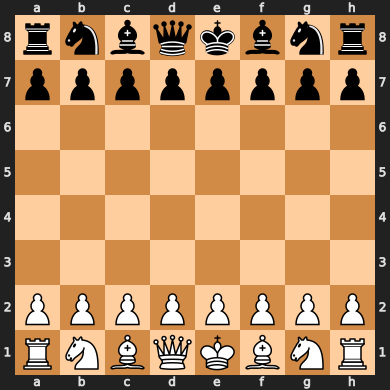
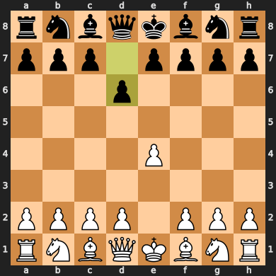
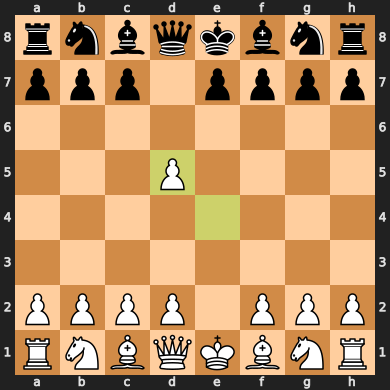
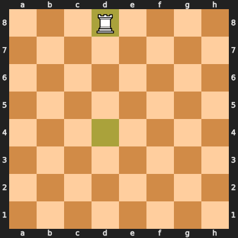
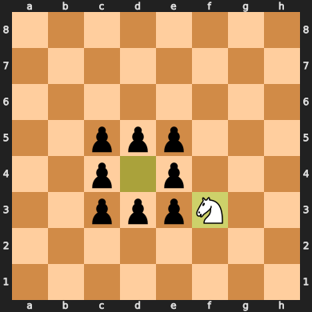
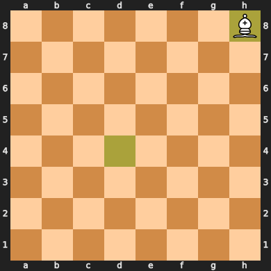
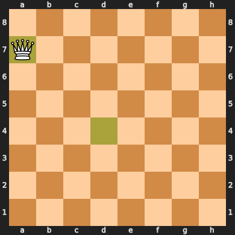
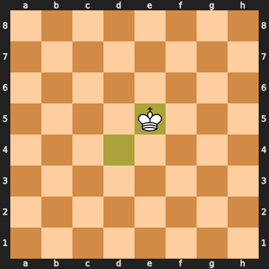

Starting position:

This notebook demonstrates how each chess piece moves using the python-chess library. We’ll explore the movement patterns of all six types of chess pieces: pawn, rook, knight, bishop, queen, and king.
Pawns are the most numerous pieces on the board. They have unique movement rules: - Move forward one square (or two squares from starting position) - Capture diagonally forward - Cannot move backward
# Demonstrate pawn movement
pawn_board = chess.Board()
# Move a pawn forward two squares from starting position
pawn_move1 = chess.Move.from_uci("e2e4")
pawn_board.push(pawn_move1)
print("White pawn moves from e2 to e4 (two squares forward from starting position):")
print(pawn_board)
print()
# Black pawn moves one square
pawn_move2 = chess.Move.from_uci("d7d6")
pawn_board.push(pawn_move2)
print("Black pawn moves from d7 to d6 (one square forward):")
pawn_boardWhite pawn moves from e2 to e4 (two squares forward from starting position):
r n b q k b n r
p p p p p p p p
. . . . . . . .
. . . . . . . .
. . . . P . . .
. . . . . . . .
P P P P . P P P
R N B Q K B N R
Black pawn moves from d7 to d6 (one square forward):

# Demonstrate pawn capture
capture_board = chess.Board("rnbqkbnr/ppp1pppp/8/3p4/4P3/8/PPPP1PPP/RNBQKBNR w KQkq d6 0 2")
print("Position where white pawn can capture:")
print(capture_board)
print()
# Pawn captures diagonally
capture_move = chess.Move.from_uci("e4d5")
capture_board.push(capture_move)
print("White pawn captures black pawn diagonally (e4 takes d5):")
capture_boardPosition where white pawn can capture:
r n b q k b n r
p p p . p p p p
. . . . . . . .
. . . p . . . .
. . . . P . . .
. . . . . . . .
P P P P . P P P
R N B Q K B N R
White pawn captures black pawn diagonally (e4 takes d5):

Rooks move in straight lines: - Any number of squares horizontally or vertically - Cannot jump over other pieces - Can capture enemy pieces by moving to their square
# Demonstrate rook movement
rook_board = chess.Board("8/8/8/8/3R4/8/8/8 w - - 0 1")
print("Rook on d4 - can move horizontally or vertically:")
print(rook_board)
print()
# Show possible rook moves
rook_square = chess.D4
legal_moves = [move for move in rook_board.legal_moves if move.from_square == rook_square]
print(f"Legal moves for rook on d4: {[move.uci() for move in legal_moves]}")
print()
# Move rook vertically
rook_move = chess.Move.from_uci("d4d8")
rook_board.push(rook_move)
print("Rook moves from d4 to d8 (vertical movement):")
rook_boardRook on d4 - can move horizontally or vertically:
. . . . . . . .
. . . . . . . .
. . . . . . . .
. . . . . . . .
. . . R . . . .
. . . . . . . .
. . . . . . . .
. . . . . . . .
Legal moves for rook on d4: ['d4d8', 'd4d7', 'd4d6', 'd4d5', 'd4h4', 'd4g4', 'd4f4', 'd4e4', 'd4c4', 'd4b4', 'd4a4', 'd4d3', 'd4d2', 'd4d1']
Rook moves from d4 to d8 (vertical movement):

Knights have a unique L-shaped movement pattern: - Move in an “L” shape: 2 squares in one direction, then 1 square perpendicular - Can jump over other pieces - Always lands on a square of opposite color
# Demonstrate knight movement
knight_board = chess.Board("8/8/8/8/3N4/8/8/8 w - - 0 1")
print("Knight on d4 - moves in L-shaped patterns:")
print(knight_board)
print()
# Show all possible knight moves
knight_square = chess.D4
legal_moves = [move for move in knight_board.legal_moves if move.from_square == knight_square]
print(f"Legal moves for knight on d4: {[move.uci() for move in legal_moves]}")
print()
# Move knight in L-shape
knight_move = chess.Move.from_uci("d4f5")
knight_board.push(knight_move)
print("Knight moves from d4 to f5 (L-shaped move):")
knight_board# Demonstrate knight jumping over pieces
jump_board = chess.Board("8/8/8/2ppp3/2pNp3/2ppp3/8/8 w - - 0 1")
print("Knight surrounded by pawns - can still jump over them:")
print(jump_board)
print()
# Knight can still move despite being surrounded
knight_square = chess.D4
legal_moves = [move for move in jump_board.legal_moves if move.from_square == knight_square]
print(f"Knight can still move to: {[move.uci() for move in legal_moves]}")
print()
# Jump over pieces
jump_move = chess.Move.from_uci("d4f3")
jump_board.push(jump_move)
print("Knight jumps from d4 to f3, over the surrounding pawns:")
jump_boardKnight surrounded by pawns - can still jump over them:
. . . . . . . .
. . . . . . . .
. . . . . . . .
. . p p p . . .
. . p N p . . .
. . p p p . . .
. . . . . . . .
. . . . . . . .
Knight can still move to: ['d4e6', 'd4c6', 'd4f5', 'd4b5', 'd4f3', 'd4b3', 'd4e2', 'd4c2']
Knight jumps from d4 to f3, over the surrounding pawns:

Bishops move diagonally: - Any number of squares diagonally - Cannot jump over other pieces - Always stay on squares of the same color
# Demonstrate bishop movement
bishop_board = chess.Board("8/8/8/8/3B4/8/8/8 w - - 0 1")
print("Bishop on d4 - moves diagonally:")
print(bishop_board)
print()
# Show possible bishop moves
bishop_square = chess.D4
legal_moves = [move for move in bishop_board.legal_moves if move.from_square == bishop_square]
print(f"Legal moves for bishop on d4: {[move.uci() for move in legal_moves]}")
print()
# Move bishop diagonally
bishop_move = chess.Move.from_uci("d4h8")
bishop_board.push(bishop_move)
print("Bishop moves from d4 to h8 (diagonal movement):")
bishop_boardBishop on d4 - moves diagonally:
. . . . . . . .
. . . . . . . .
. . . . . . . .
. . . . . . . .
. . . B . . . .
. . . . . . . .
. . . . . . . .
. . . . . . . .
Legal moves for bishop on d4: ['d4h8', 'd4g7', 'd4a7', 'd4f6', 'd4b6', 'd4e5', 'd4c5', 'd4e3', 'd4c3', 'd4f2', 'd4b2', 'd4g1', 'd4a1']
Bishop moves from d4 to h8 (diagonal movement):

The queen is the most powerful piece: - Combines rook and bishop movement - Can move any number of squares horizontally, vertically, or diagonally - Cannot jump over other pieces
# Demonstrate queen movement
queen_board = chess.Board("8/8/8/8/3Q4/8/8/8 w - - 0 1")
print("Queen on d4 - most powerful piece, combines rook and bishop moves:")
print(queen_board)
print()
# Show possible queen moves
queen_square = chess.D4
legal_moves = [move for move in queen_board.legal_moves if move.from_square == queen_square]
print(f"Legal moves for queen on d4: {[move.uci() for move in legal_moves]}")
print(f"Total possible moves: {len(legal_moves)}")
print()
# Move queen diagonally
queen_move = chess.Move.from_uci("d4a7")
queen_board.push(queen_move)
print("Queen moves from d4 to a7 (diagonal movement):")
queen_boardQueen on d4 - most powerful piece, combines rook and bishop moves:
. . . . . . . .
. . . . . . . .
. . . . . . . .
. . . . . . . .
. . . Q . . . .
. . . . . . . .
. . . . . . . .
. . . . . . . .
Legal moves for queen on d4: ['d4h8', 'd4d8', 'd4g7', 'd4d7', 'd4a7', 'd4f6', 'd4d6', 'd4b6', 'd4e5', 'd4d5', 'd4c5', 'd4h4', 'd4g4', 'd4f4', 'd4e4', 'd4c4', 'd4b4', 'd4a4', 'd4e3', 'd4d3', 'd4c3', 'd4f2', 'd4d2', 'd4b2', 'd4g1', 'd4d1', 'd4a1']
Total possible moves: 27
Queen moves from d4 to a7 (diagonal movement):

The king is the most important piece: - Moves one square in any direction (horizontal, vertical, or diagonal) - Cannot move into check (attacked by enemy pieces) - Can castle under certain conditions
# Demonstrate king movement
king_board = chess.Board("8/8/8/8/3K4/8/8/8 w - - 0 1")
print("King on d4 - moves one square in any direction:")
print(king_board)
print()
# Show possible king moves
king_square = chess.D4
legal_moves = [move for move in king_board.legal_moves if move.from_square == king_square]
print(f"Legal moves for king on d4: {[move.uci() for move in legal_moves]}")
print()
# Move king one square
king_move = chess.Move.from_uci("d4e5")
king_board.push(king_move)
print("King moves from d4 to e5 (one square diagonally):")
king_boardKing on d4 - moves one square in any direction:
. . . . . . . .
. . . . . . . .
. . . . . . . .
. . . . . . . .
. . . K . . . .
. . . . . . . .
. . . . . . . .
. . . . . . . .
Legal moves for king on d4: ['d4e5', 'd4d5', 'd4c5', 'd4e4', 'd4c4', 'd4e3', 'd4d3', 'd4c3']
King moves from d4 to e5 (one square diagonally):

# Demonstrate castling
castle_board = chess.Board("r3k2r/8/8/8/8/8/8/R3K2R w KQkq - 0 1")
print("Position where both sides can castle:")
print(castle_board)
print()
# Show castling moves
castling_moves = [move for move in castle_board.legal_moves if castle_board.is_castling(move)]
print(f"Available castling moves: {[move.uci() for move in castling_moves]}")
print()
# Perform kingside castling
castle_move = chess.Move.from_uci("e1g1")
castle_board.push(castle_move)
print("White castles kingside (O-O):")
castle_boardChess has several special moves beyond basic piece movement:
# Demonstrate en passant
en_passant_board = chess.Board("rnbqkbnr/ppp1p1pp/8/3pPp2/8/8/PPPP1PPP/RNBQKBNR w KQkq f6 0 3")
print("Position where en passant is possible:")
print(en_passant_board)
print()
# Check for en passant moves
en_passant_moves = [move for move in en_passant_board.legal_moves if en_passant_board.is_en_passant(move)]
print(f"En passant moves available: {[move.uci() for move in en_passant_moves]}")
print()
# Perform en passant
if en_passant_moves:
en_passant_board.push(en_passant_moves[0])
print("After en passant capture:")
print(en_passant_board)# Demonstrate pawn promotion
promotion_board = chess.Board("8/P7/8/8/8/8/8/8 w - - 0 1")
print("White pawn ready for promotion:")
print(promotion_board)
print()
# Promote pawn to queen
promotion_move = chess.Move.from_uci("a7a8q")
promotion_board.push(promotion_move)
print("Pawn promotes to queen:")
promotion_boardThis notebook demonstrated the movement patterns of all chess pieces:
Special moves include castling, en passant, and pawn promotion. Understanding these movement patterns is fundamental to playing chess effectively!
# Final demonstration: A complete game position
game_board = chess.Board()
# Play a few moves to show a realistic position
moves = ["e2e4", "e7e5", "g1f3", "b8c6", "f1b5", "a7a6"]
for move in moves:
game_board.push(chess.Move.from_uci(move))
print("A typical chess position after a few moves:")
print(game_board)
print()
print(f"Legal moves available: {len(list(game_board.legal_moves))}")
print(f"Turn: {'White' if game_board.turn else 'Black'}")